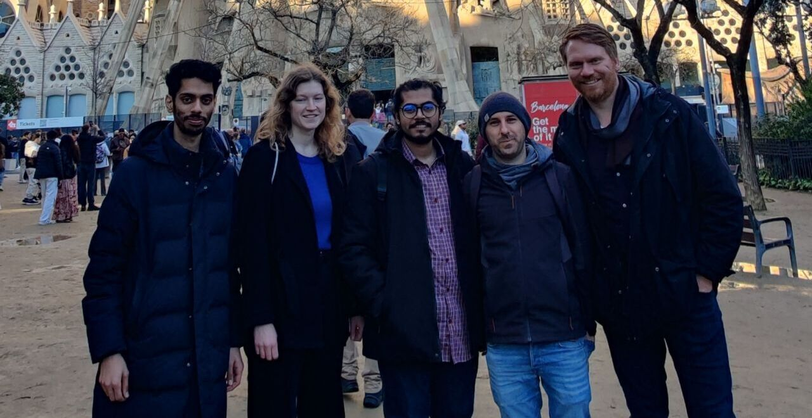
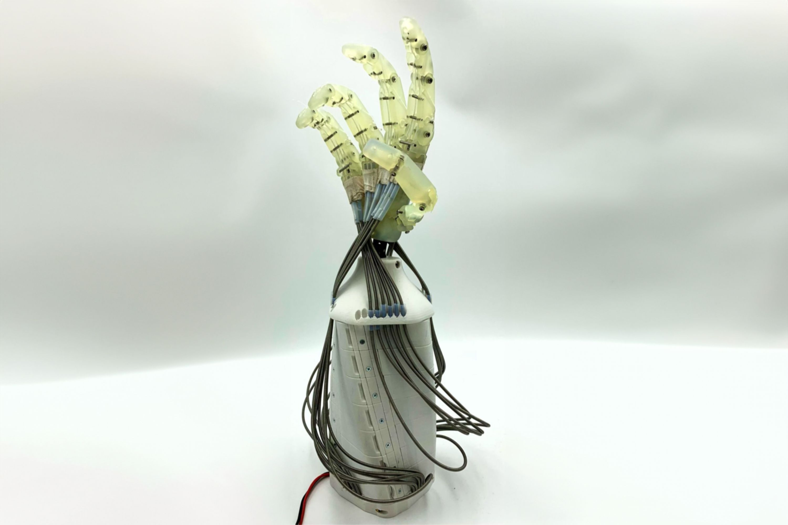
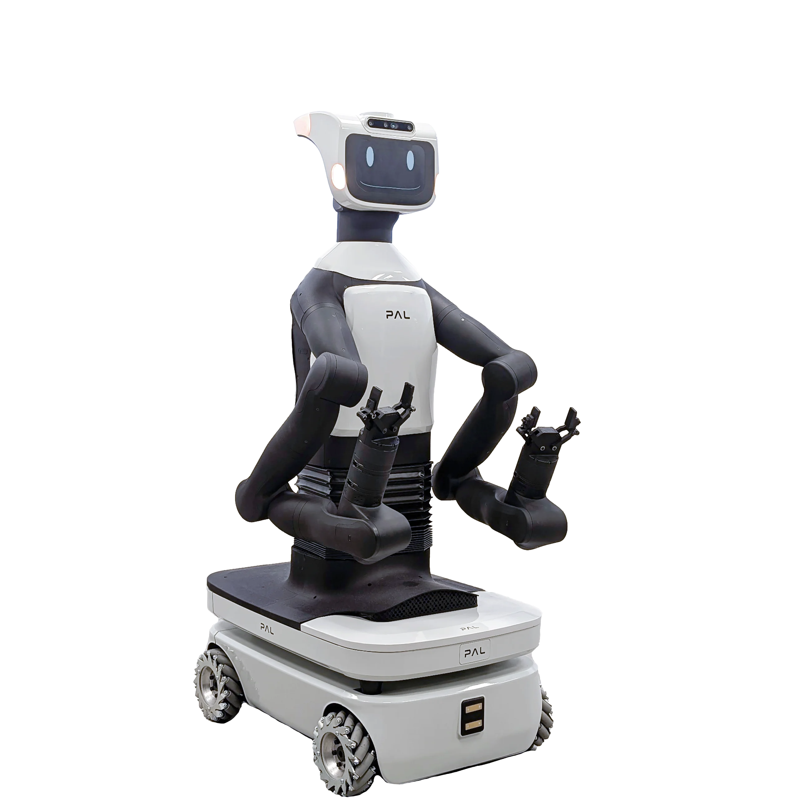
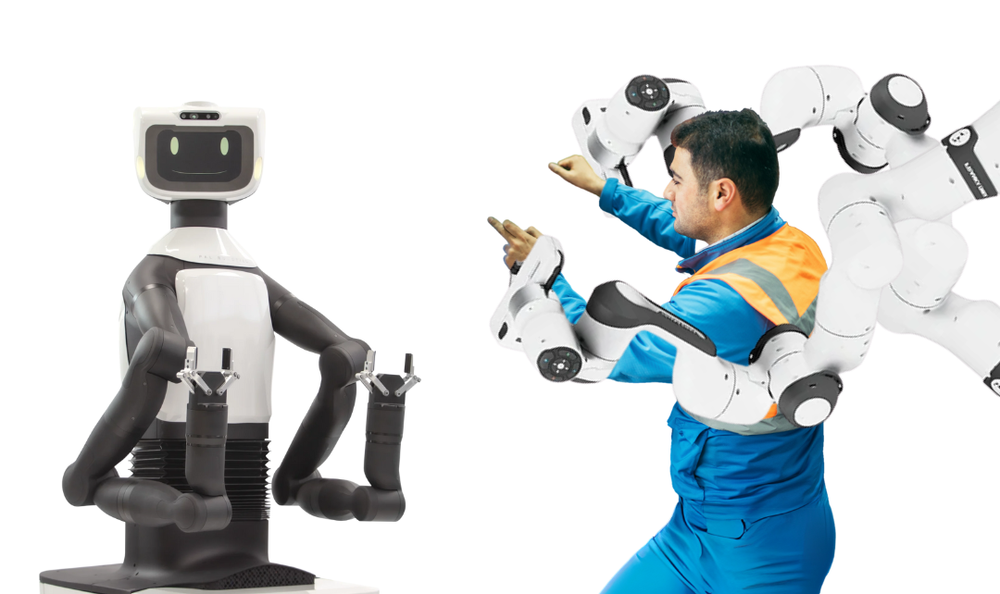
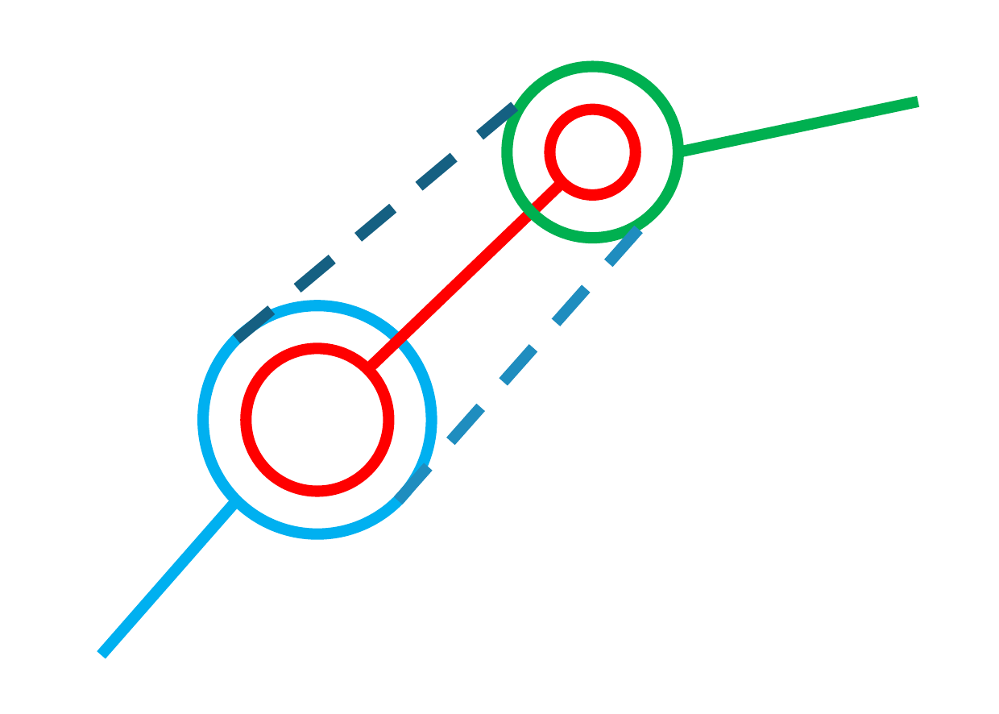
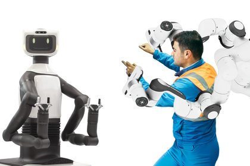
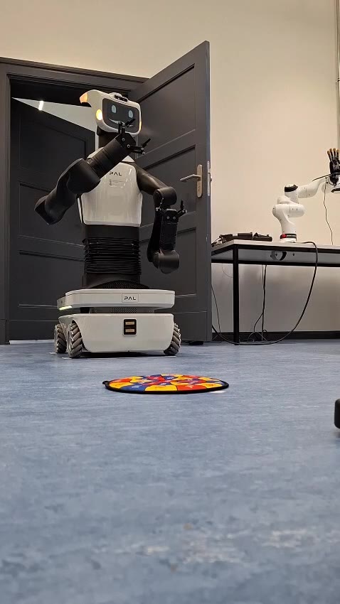
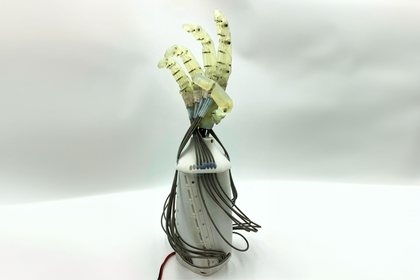

IEEE Robotics and Automation Letters · 2025
Variable Stiffness Actuation via 3D-Printed Nonlinear Torsional Springs
Spring design, modelling and experimental evaluation for adjustable joint stiffness.
We develop compliant robotic hands and arms, methods for learning movements from demonstration, and interfaces for humanoid teleoperation. We investigate applications in horticulture, care, instrument handling and university teaching.
Explore our researchWe develop robotic hands and arms with mechanically adjustable stiffness. Our research combines nonlinear spring mechanisms, tendon-driven actuation and programmable fingertip compliance to shape how robots grasp objects and respond to contact.
Alongside mechanism design, we develop movement primitives for learning dynamic skills from human demonstration and interfaces for controlling humanoid robots through the operator’s movements. We investigate how these methods can support manipulation in tasks with variable objects and contact conditions.
Our work connects biomechanical principles, modelling, prototype development and experimental evaluation. The long-term research direction is an elastic humanoid system that combines compliant mechanisms with learning and teleoperation.
Led by Prof. Dr.-Ing. Hannes Höppner, SIRo Lab is based at Berliner Hochschule für Technik in the Haus der Robotik. Our research is closely connected to the B.Eng. programme in Humanoid Robotics. Student projects, theses and internships contribute to mechanism development and experimental evaluation.

Four questions guide our work on mechanical compliance, dynamic manipulation and accessible robot operation. Each connects a methodological contribution with the development and evaluation of research hardware.
We study biological principles such as variable stiffness, antagonistic actuation and tendon-driven motion, then investigate how they can be implemented in robotic mechanisms. The aim is to understand and transfer useful functions, rather than reproduce anatomy in detail.
How can mechanical design simplify grasping and manipulation?
Mechanical compliance allows a hand to adapt to contact through passive deformation. We investigate how Bowden-cable actuation and designed fingertip compliance can shape grasping behaviour and reduce the demands on active control.
How do elastic couplings between joints shape end-effector stiffness?
Elastic couplings between joints can extend the range of achievable end-effector stiffness and transfer energy between joints. We investigate how coupling layout affects stiffness direction, magnitude and task performance, and when variable stiffness offers an advantage over fixed series elasticity.
How can demonstrated movements be generalised and composed into manipulation tasks?
We investigate how robots can learn dynamic manipulation skills from human demonstration, using throwing with TIAGo Pro as an experimental task. Related work is under review for ICRA 2027. A further research direction explores task composition from a library of movements.
How can motion input and haptic feedback support precise robot operation by non-experts?
We develop two approaches to accessible teleoperation: a visuo-haptic station intended to convey contact forces to the operator, and a compact input device without force feedback. We investigate the workspace, feedback and interface requirements of different application settings.
IEEE Robotics and Automation Letters · 2025
Spring design, modelling and experimental evaluation for adjustable joint stiffness.
IEEE ICRA · 2025
A mechanical approach to adjustable stiffness for soft robotic hands.
IEEE-RAS Humanoids · 2025
Workspace modelling and cobot placement for a visuo-haptic operator interface.
IEEE/RSJ IROS · 2024
Fingertip geometry and compliance as design parameters for object handling.
We develop the SIRo Soft Hand, a multiarticular variable-stiffness arm and visuo-haptic interfaces in the lab. The commercial TIAGo Pro platform supports movement-learning experiments and the planned integration of manipulation and teleoperation components.

A tendon-driven anthropomorphic hand combining Bowden-cable-based variable stiffness with programmable fingertip compliance. Its wrist is designed to replace TIAGo Pro’s last two arm axes. Mounting and functional integration are in progress, initially on one arm.

A mobile dual-arm robot from PAL Robotics, used for learning dynamic movements from demonstration and for developing teleoperation and hand integration.

A dual-arm interface concept for commanding robot motion and providing haptic feedback. Published work addresses cobot placement using human and robot workspace models. Initial arm teleoperation and haptic-feedback demonstrations have been conducted internally.

A 2-DoF research arm with six drives, combining monoarticular variable-stiffness actuation at each joint with a biarticular coupling. The setup supports research on coupled elasticity and end-effector stiffness. Evaluation of the arm measurements is pending.
TIAGo Pro provides the integration platform for the SIRo Soft Hand, movement primitives and teleoperation interfaces. Throwing experiments use a 7-DoF arm with the standard gripper. We are integrating the hand and its compliant wrist on one arm first, alongside development of the teleoperation system.

Motion input and planned haptic feedback

Dynamic movements learned from demonstration

Compliant hand and wrist, integration on one arm in progress
The application images are AI-generated concept illustrations. Greenhouse experiments have used student-built hands; instrument-reprocessing trials use a SIRo Soft Hand on a separate arm. The TIAGo-based application systems are under development.
The multiarticular VSA arm is a separate research platform for investigating coupled elasticity. It complements work on TIAGo by exploring mechanical properties needed for future elastic manipulators.
Our externally funded projects support research on actuation, learning and teleoperation, as well as the development of application demonstrators.
Infrastructure for research on soft manipulation and visuo-haptic teleoperation, including TIAGo Pro and collaborative robot arms. The project investigates applications in greenhouse harvesting, university teaching and ambulatory care.
Steffen Puhlmann · Ranjit Santhanaraman · Rafid Abyaad · Felix Schlüter
The Berlin Initiative for Applied Foundation Model Research brings together robotics, quantitative biology and predictive medicine. SIRo contributes research on data-efficient learning from demonstration for dexterous manipulation, including reusable movement primitives.
SIRo develops teleoperated assistance for medication preparation, with a focus on ambulatory care. Exoskeleton research is conducted by another laboratory within the wider Robo4Care project. Partners include ASH Berlin, HTW Berlin, Fraunhofer IZM/IPK, Johannesstift Diakonie and IFA/DGUV.
The project investigates the SIRo Soft Hand for handling surgical instruments before machine cleaning. Target tasks include separating instruments, opening hinged tools and placing them in washing baskets. Initial grasps have been demonstrated. Industry partner: enamentis GmbH.
In BHT’s B.Eng. Humanoid Robotics, students contribute to the lab through practical projects, theses and internships. They combine mechanism design, fabrication, control and experimental evaluation.
In the Robotics Project, teams develop robotic hands and handheld controllers, then test them in defined manipulation tasks. Challenges include handling everyday objects and harvesting greenhouse crops.
A planned teaching scenario will investigate TIAGo Pro as a facilitator or team member in agile project-management exercises, including the Ball Point Game. The research interest is how robot participation affects collaboration and learning.
Student experiments also inform research priorities. Greenhouse trials, for example, identified insufficient hand force for operating pruning scissors in the tested configurations. These observations help define requirements for subsequent designs.
Topics are developed from the lab’s four research questions and scoped to the type and duration of the student project.
Student teams combine simulation and prototyping with tests on physical hardware.
Bachelor’s and Master’s theses and internships address defined research and development tasks. Enquiry guidelines →
Student prototypes and experimental findings inform subsequent hardware development and research questions.
Our researchers work on compliant mechanisms, movement learning and teleoperation. Their profiles describe individual contributions, projects and publications.
TIAGo Pro cutting the ribbon at the opening of BHT’s Haus der Robotik in July 2025.
Learn moreThe SIRo Lab is one of three research laboratories in BHT’s Haus der Robotik on Kurfürstenstraße, opened in July 2025. Located on the second floor, the lab focuses on robotic manipulation and physical interaction.
The building also houses the Neurorobotics Research Laboratory, which studies morphologies and distributed neural control, and the Compliant Robotics Laboratory, which works on pneumatic actuation, artificial muscles and locomotion.
Shared infrastructure includes humanoid and mobile robots, collaborative manipulators, visuo-haptic interfaces, and a workshop for laser cutting, milling and additive manufacturing. This supports the development and evaluation of new mechanisms within the building.
Research information reviewed in September 2026.